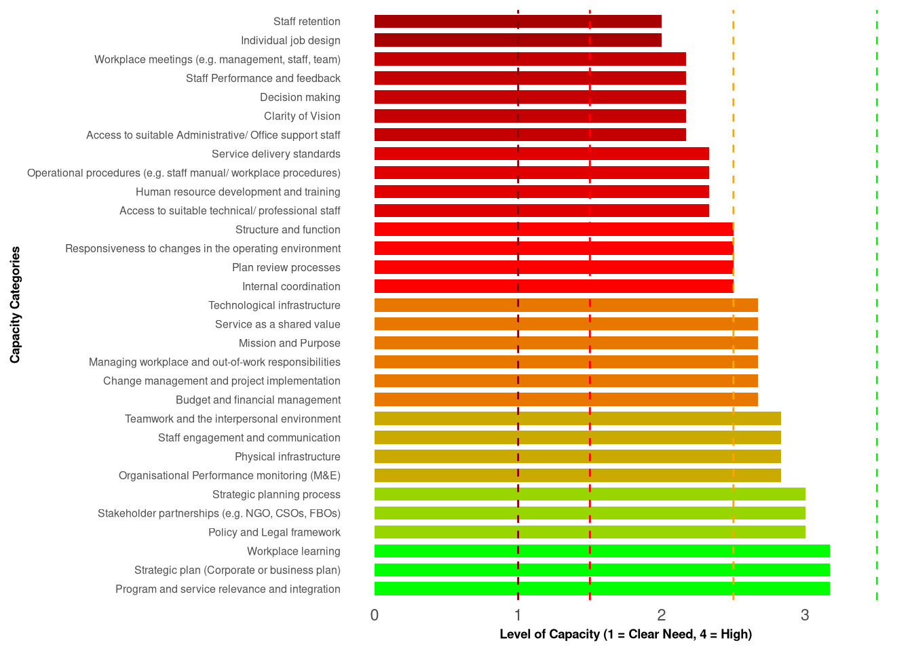

Institutional Capacity Assessment Report - Department of Forestry, September 2025
Ministry of Agriculture, Livestock, Forestry, Fisheries and Biosecurity
1 Introduction
The National Sustainability Development Plan’s (NSDP) society pillar goal 6 provides for “strong and effective institutions for ensuring a dynamic public sector with good governance principles and strong institutions delivering the support and services expected by all citizens of Vanuatu”. OPSC’s overall development program and policy objectives for the work of individual or institutional capacity assessment and development is also guided by this goal.
This report provides some background to the Institutional Capacity Assessment process undertaken with Department of Forestry staff and provides the results or outcome of the assessment conducted also with Department of Forestry staff in August 2025. Department of Forestry is encouraged to review and verify the report, and make appropriate plans to address any shortfall or improvements in institutional capacity areas or elements identified through the assessment.
2 Background
2.1 What is meant by “capacity” and “capacity development”?
The phrase “we need more capacity” is often used to refer to: we don’t have enough staff; we need more training; our office space is too small; our strategy is demanding more of us than what we can realistically deliver; we need better systems of work; we need more efficient processes; our infrastructure is outdated and needs replacement; we need bigger budgets. Any of these statements are a reflection of capacity, but none of them alone suffices a thorough definition of capacity.
‘Capacity’ is a commonly used term in the context of international, organisational, and community development. However, when confronted with institutional capacity development assessment and planning requirements, it is important to have a shared understanding of what ‘capacity’ means to ensure effective development approaches. Key understanding can be drawn from the following perspectives on the nature of capacity and capacity development.
On the nature of capacity…
“…the ability of individuals, institutions, and societies to perform functions, solve problems, and set and achieve objectives in a sustainable manner.” (United Nations Development Programme, 2010, p. 2)
On the development of capacity…
Capacity development involves much more than enhancing the knowledge and skills of individuals. It depends crucially on the quality of the organisations in which they work. In turn, the operations of particular organisations are influenced by the enabling environment – the structures of power and influence and the institutions – in which they are embedded. Capacity is not only about skills and procedures; it is also about incentives and governance. (OECD, 2008, p. 239)
Capacity development is a locally driven process of learning by leaders, coalitions and other agents of change that bring about changes in socio-political, policy-related, and organizational factors to enhance local ownership for and the effectiveness and efficiency of efforts to achieve a development goal. (Otoo, Agapitova, & Behrens, 2009, p. 3)
So, capacity is about people, action, and results, all influenced by the contexts and environments in which they operate. Capacity development is therefore about learning and change that supports the achievement of desired development results within that context and environment. Institutional capacity development ultimately aims to increase the ability of institutions to achieve the results for which they are responsible.
Figure 1: ‘Capacity’ – people, context & environment (Placeholder for Figure 1)
It is important to understand the idea of “capacity” as an emergent property and is “living and dynamic” (Fowler & Ubels, 2010) rather than as a fixed and easily measurable “thing”. Capacity can manifest in many ways: from an individual’s choice to exercise a key skill to achieve a task result, to a workgroup’s ability to coordinate actions to process a complex request, through to the coordinated delivery of public services to the community.
Figure 2: Key factors influencing ‘capacity’ (Placeholder for Figure 2)
Figure 2 provides important ideas to guide the way we can examine and understand capacity and how capacity might be developed in the line agencies of the public service. It seeks to bring these ideas together, by identifying the key factors that are likely to influence capacity and the development of capacity in this context and environment:
At the highest strategic level, line agencies operate under particular legal frameworks and national policies such as the NSDP that define their powers and responsibilities that parts of their overall work system hold, which is then reflected in the mandate and purpose of each part. These in effect, define and bind what capacity is required of the line agencies as a whole, and of each part.
Two key broad categories bound the capacity elements at the core: institutional capacity, which is influenced by strategic plans and budgets, and human resource capacity, which is influenced by the culture and environment of the workplace. At the core are the institutional elements of organisational design, operational systems, HRM, and management processes, all of which influence the performance and outcomes of the agency.
Underpinning all this is the capacity of institutions to demonstrate effective leadership and management, together with key enabling elements such as access to IT and information, facilities and equipment, availability of human resources with required capabilities, and the available options for targeted and specific human resource development.
In summary, the following key points are essential to consider when planning for capacity development:
- Capacity is about the knowledge, skills, and abilities of people, and about what people can and will do together;
- The primary driver for capacity concerns the strategic goals and purpose of the organisation, so all development planning must consider how well existing capacity serves these needs, which is what drives the need for assessment;
- Changes in capacity should be measurable through achievement of planned activities, outputs, and outcomes, and ultimately impacts in the community through the line agencies’ service delivery;
- Capacity development is a long-term process – it takes time, resources, and perseverance;
- Capacity is an emergent property of an overall work system, and many factors contribute to capacity, how capacity emerges, and what can be achieved, so sensitivity and acute observation are needed to ensure that development is timely and appropriate.
3 Institutional Capacity Assessment Grid
3.1 How Department of Forestry’s institutional capacity was assessed
OPSC’s Framework for Institutional Capacity Assessment and Development (see Appendix A) is designed to clarify the capacity needs, and assessment and development approach that is relevant at the level of the Institution or Agency. The focus is on institutional capacity targeting organisational design, HRM, operational systems, leadership and management practice, facilities and equipment, and the effectiveness of the organisation in coordinating action to achieve operational and development objectives.
The assessment framework and descriptions are based on a range of sources that describe aspects of effective organisational functioning that have been adapted to the unique Vanuatu Public Sector context.
The objectives of the ICAG, which can be used by staff and stakeholders alike, include:
- To identify those particular areas of capacity that are strongest and those that need improvement;
- To assess changes in an institution’s capacity over time by readministering the ICAG;
- To draw out different views within an organisation regarding capacity. Different responses to the ICAG amongst staff, stakeholders, and donors, for example, can be a valuable discussion starter within an organisation.
This assessment examined a range of institutional capacity elements within the Department of Forestry. A total of eleven (11) Department of Forestry staff completed the institutional capacity assessment in November 2019.
The primary tool used to undertake the assessment is the Institutional Capacity Assessment Grid (ICAG), a diagnostic tool that has been developed and tailored to capture key data about capacity that is relevant to line agencies or institutions. The ICAG asks the reader to score the organisation on each element of organisational capacity provided, by selecting the text that best describes the organisation’s current status or performance.
The ICAG itself is not a scientific tool, and should not be used as one. It is difficult to quantify the different dimensions of capacity, and therefore the different descriptive text is intended to be indicative rather than exact. In this way, the scores are meant to provide an indication of the “temperature” of the organisation’s capacity in order to identify areas of improvement.
The tool is meant to be a starting point for conversation leading to capacity development planning. The 5 steps in the process are described in the following diagram.
Figure 2: Key factors influencing ‘capacity’ (Placeholder for Figure 2, repeated as per document)
This report supports Step 3, and is intended to encourage closer examination of key capacity areas that can then become the focus of capacity development. The ICAG is also designed to help the members of individual agencies reflect on and assess their own organisational capacity.
The results of the ICAG can be used in many ways:
- To define key development priorities for line agencies;
- To establish a “baseline” for organisational capacity and identify common development issues across line agencies and sectors;
- Lastly, to identify where additional program supports from the OPSC or from development or donor partners could be offered to best effect.
3.2 Methodology
3.2.1 Data Collection
The Institutional Capacity Assessment Grid (ICAG) was used to gather information about the organizational capacity of different departments within the Vanuatu Public Sector, including the Department of Forestry. This tool helps evaluate key areas like organizational design, human resource management, operational systems, leadership practices, and infrastructure. The survey was conducted using Microsoft Office 365 Forms. They rated 31 capacity categories on a scale from 1 (Clear Need) to 4 (High) based on statements that described how well the department was performing (e.g., from “little shared understanding” to “clear and compelling vision”).
The survey responses were collected through Microsoft Office 365 Forms and saved into a spreadsheet. This file included answers from various departments, such as the Department of Forestry and the Department of Water Resources. Each row in the spreadsheet represents one respondent, with details like their ID, email, name, province, ministry, department, and their ratings for the 31 capacity categories, written as descriptive text based on their chosen score.
3.2.2 Data Processing
The following steps were undertaken:
The information from the survey was prepared for analysis. Here’s what was done:
- Data Extraction: The survey responses were changed into a format that could be easily analyzed.
- Data Cleaning: The text answers (e.g., “little shared understanding”) were turned into numbers based on the ICAG scale:
- A = 1 (Clear Need)
- B = 2 (Basic)
- C = 3 (Moderate)
- D = 4 (High) The first letter of each response was used to assign the correct number. If a response was missing or unclear, it was marked as missing and handled later.
3.3 Data Analysis
The prepared data was analyzed using R to understand the Department of Forestry’s institutional capacity. The process included the following steps:
- Loading the Dataset: The survey data was brought into R1, and only the responses from the Department of Forestry were selected.
- Calculating Mean Scores: We figured out the average scores for each of the 31 capacity categories based on the Department of Forestry’s responses.
- Identifying Strongest and Weakest Capacities: The top two categories with the highest average scores were noted as the strongest, and categories with averages of 2 or lower were marked as the weakest.
- Rating Distribution: We counted how many times each score (1 to 4) appeared for each capacity category.
- Visualization Data: The average scores were prepared for charts, with one chart showing categories from most to least developed and another from least to most developed.
- Visualization: charts were created using R. The first shows average scores ordered from most to least developed, and the second ranks them from least to most developed, using colors to highlight the scores and lines to show different levels of need.
3.4 Overview of results
As a public institution with a broad scope and mandate for implementing the national government’s priorities, MALFFB Corporate Plan, Department Business Plan, and other priorities of the NSDP, the Department of Forestry acknowledges its challenges including limited financial and human resources. Department of Forestry has undertaken to shift its approach toward working closely with, and harnessing the available resources offered through other government line agencies, and credible non-government, civil, and faith-based organisations. This brings with it the requirement for development and consolidation of particular skills and capacities.
To build an evidence base for capacity development to support this shift, staff from the Department of Forestry participated in an institutional capacity assessment activity in November 2019.
A more detailed breakdown of the data indicates the following:
3.4.1 Strongest Capacities
Based on Figure 3, capacities that indicate just a little over moderate level…
(2) Mission and Purpose, described as, “Clear expression of organisation’s reason for existence which reflects its purpose and values; held by many within the organisation and referred to often”.
(5) Strategic plan (Corporate or business plan), described as, “The plan is in place, is up to date and links well to the mission; Most strategies in the plan have been developed into clear projects with budgets and activities well defined to guide work and program planning; Most staff are aware of the plan, use it and were consulted when it was developed; Plans are used to guide management decisions”.
3.4.2 Capacity Priorities for Development
Analysis of the assessment results indicates the following opportunities and development recommendations. Note that all recommendations made need to be validated through examination and conversation with Department of Forestry or agency staff.
For improved institutional performance, the results of the institutional capacity assessment highlight the following areas for development to raise the level of capacity from “Basic” or just below moderate level, up to at least a “Moderate” level.
Capacities that are at a level of basic or lower than moderate capacity, and are therefore priorities for development are:
- Clarity of Vision: “Mixed understanding of what the organisation aspires to achieve; lacks clarity or specificity; held by only a few people or just something that is written on a plan but with little ownership”.
- Policy and Legal framework: “Policy or legal framework exists but is scant, unclear and subject to many different interpretations; Critical legislation is out of date and needs review”.
- Responsiveness to changes in the operating environment: “Basic knowledge and understanding of what is happening in the operating environment including political changes and emerging issues; Low level ability to respond appropriately”.
- Strategic planning process: “Some ability and tendency to develop plans; Planning is mainly done behind ‘closed doors’ by management; Some consultation with staff is done, but most decisions about priorities are made at the top; The plan often has many untested assumptions”.
- Plan review processes: “The plan review is done, but it is usually reactive and may be based on an outside request or a problem that has emerged; Plan review is not a normal part of management practice”.
- Budget and financial management: “Budget and financial management is not well understood; Financial management is reactive and based on the budget that is allocated; Budget setting does not link to the GoV process”.
- Program and service relevance and integration: “Most programs and services are well defined and can be linked to the mission and purpose; Program offerings may be somewhat scattered, perhaps reactive to emerging needs rather than clearly aligned”.
- Structure and function: “Some organisational functions are clearly defined, others are not; Key roles are formalised but many are not; Staff are unclear about roles, responsibilities, delegations and accountabilities; Organisational chart is out of date and incomplete”.
- Individual job design: “Positions exist for most key roles; Most key positions are well defined and have job descriptions; Some cases of unclear responsibilities, delegations or accountabilities; Some roles don’t have job descriptions; Some problems are evident in relation to the alignment between role and salary”.
- Operational procedures (e.g. staff manual/workplace procedures): “Some procedures exist but are out of date or not in use; Some awareness exists of the need to establish and meet quality standards for the work”.
- Internal coordination: “Interactions between different programs or organisational units are generally good although some coordination issues do exist; Some pooling of ideas and resources”.
- Access to suitable administrative/office support staff: “It is possible to source suitably qualified staff for most key roles, but it often takes quite a deal of time to find best fit incumbents; The market supply of suitable staff is quite limited and unstable”.
- Access to suitable technical/professional staff: “It is possible to source suitably qualified staff for most key roles, but it often takes quite a deal of time to find best fit incumbents; The market supply of suitable staff is quite limited and unstable”.
- Staff Performance and feedback: “Performance standards and expectations are not clearly defined; Feedback and coaching staff on performance issues occurs sporadically; Staff appraisal process is in place, but may be ineffective or inconsistently applied”.
- Human resource development and training: “Some understanding of learning and development needs but no active development plan in place; Training is seen as a way to ‘fix’ a problem; Management are reactive responding to emerging needs in a ‘hit and miss’ manner; Development needs are addressed based on opportunities that present, rather than according to a plan”.
- Staff retention: “Staff tend to stay but mostly for reasons concerned with having no other place to go”.
- Decision making: “The appropriate decision makers are known with clear delegations of authority; The decision making process is fairly well established, but breaks down if key people are not available; Decisions made are not always well informed”.
- Staff engagement and communication: “Staff are consulted at times but are usually left out of the main discussions; Some processes (e.g. email notifications) exist to keep staff informed about what is going on, but they are not always reliable or timely”.
- Workplace meetings (e.g. management meetings, staff meetings, team meetings): “Meetings occur on an ad hoc basis and are usually in response to an issue that has become critical; No clear agenda or purpose of the meeting is established; When they occur, meetings are experienced as not very efficient or effective in addressing operational needs”.
- Change management and project implementation: “Change is approached passively and avoided until urgent; Staff do not embrace change, but they tend not to resist it either; Managers spend time driving the change, often through senior staff who they hold accountable; Implementation can be slow with lots of time spent selling ideas to staff, but can be successful”.
- Service delivery standards: “Staff are guided by standards although these are not clearly specified in organisational documents but are talked about; Staff tend to instruct each other; Service delivery is experienced as variable, and depends largely on who delivering the service”.
- Stakeholder partnership (e.g. NGOs, charitable, not-for-profit, for-profit, church, and community organisations): “Some partnerships and alliances in place; Not very active and/or troubled by some poor relationships”.
- Organisational Performance monitoring (M&E): “A few measures of performance are in place that focus on activities and outputs; This gives staff the information that they need to assess some aspects of internal efficiency, but does not indicate outcome or impact level effectiveness; Performance measures are only occasionally reviewed”.
- Teamwork and the interpersonal environment: “Teamwork is not the usual mode of operation but can be done when needed; Initiated and organised by managers; Team members usually come into collaborative work in positive ways; Relationships generally work well”.
- Service as a shared value: “The organisation recognises the importance of service but has some difficulty in following through, perhaps because of clunky, inefficient processes; Service delivery is seen as important by staff, but clients do not always feel satisfied by the interaction”.
- Workplace learning: “The organisation tends to react negatively when things go wrong but avoids laying blame; Staff hesitate in communicating problems or failures to management for fear of consequences; Management reaction is often open but can be unpredictable”.
- Physical infrastructure: “Physical infrastructure can be made to work well enough to suit the organisation’s immediate needs; Little if any room for growth; Obvious improvements could be made to help increase effectiveness and efficiency (e.g. improved maintenance; rearrangement of office space)”.
- Technological infrastructure: “Basic access to needed technology through shared facilities (phone, fax, computer, print etc); May be moderately reliable and user-friendly”.
3.4.3 Clear need for capacity development
Capacities that are at a level of Clear need for capacity development or lower than Basic capacity, and are therefore priorities for urgent development are:
- Managing workplace and out-of-work responsibilities: “Staff find it difficult to attend work and to achieve the required work hours; They feel very pulled in the direction of their out-of-work responsibilities. Characterised by high levels of unauthorised absence, usually unexplained; Management recognise the problems but fail to take action and don’t hold staff accountable for absences”.
3.4.4 Top 10 Development Priorities and Recommendations for Department of Forestry
Note – Five (5) from the 10 will be shared in thermometer illustration below, however all highlighted 10 in Figure 4 should be prioritised in this year’s (2020) planning.
3.4.5 Managing workplace and out-of-work responsibilities (29)
3.4.6 Structure and function (10)
Capacity Development Recommendation
It is recommended that Department of Forestry engage in a process to redefine structure and function so that the way that Department of Forestry is organised supports greater levels of performance and achievement.
Some key principles of organisational design are offered to guide the process:
- Structure supports purpose: Your organisation exists to fulfil a purpose (or a number of purposes), so you need to be able to clarify what the purpose actually is.
- Client’s service needs are met: The structure must support service delivery and enable smooth and effective coordination.
- Delegations, responsibilities, accountabilities, and authorities are clear: Lines of authority and reporting relationships are clear to everyone.
- Everyone knows what their role is and how it contributes to purpose: Roles need to be arranged in the structure so that everyone knows how they will contribute to the achievement of the organisation’s purpose.
- Structure supports timely communication, information transfer, and decision making: The design of the structure needs to support the organisation to be responsive and flexible in meeting changes.
- Structure supports a positive and productive working environment – collaboration and teamwork: Thinking about how people will work together is critical to ensuring a workable and practical structure. The structure should not create barriers to teamwork.
- Structure offers opportunity for career progression: It needs to be clear what pathways are available for staff to progress.
3.4.7 Technological infrastructure (31)
3.4.8 Responsiveness to changes in the operating environment (4)
3.4.9 Budget and financial management (8)
Although Department of Forestry assessment indicates that “individual staff performance” is not a top 10 priority capacity need, the information below supports the understanding of staff performance processes and to address staff performance gaps because ultimately, staff performances contribute to overall institutional performance.
3.4.10 Staff performance and feedback (16)
Capacity Development Recommendation
A key part of good Human Resource Management practice is ensuring that staff know what is expected of them, how they are performing, what they are doing well, and how they can improve. This usually involves setting up a performance appraisal and feedback process. This is a conversationally based process that is conducted on a regular basis between management and staff.
Figure 6: A performance appraisal framework (Placeholder for Figure 6)
Department of Forestry is implementing the standard PSC performance assessment and feedback process. For such a process to work well, the following elements need to be in place.
It is therefore recommended that the Department of Forestry process be implemented as planned to provide a regular opportunity for performance conversations to occur. Such conversation may be:
- Formal and set at regular time intervals, such as yearly or 6-monthly;
- Informal and based on needs as they emerge. Such performance and feedback conversations can happen any time when they are needed.
If additional support in this area of HRM is required, this can be acquired through:
- OPSC - to help to establish practical and effective HRM systems and processes;
- Learning and development support to be offered to Human Resource Officers and administrative staff to develop capacity in HRM practice;
- Learning and development support to be offered to Human Resource Officers through the HRO Network;
- Learning and development support to be offered to staff to build capacity for workplace coaching and mentoring.
It is recommended that the Department of Forestry seek to supplement their own internal capacity development efforts through these various learning and development opportunities available to it. Note that development in this area links to the recommendations for (23) Service delivery standards as indicated in Figure 3.
4 Appendix A: OPSC’s Framework for Institutional Capacity Assessment and Development
(Placeholder for Appendix A content)
5 Appendix B: Planning for Institutional Capacity Development
The following process is offered as a means by which Department of Forestry can:
- Make sense of the results of the ICAG
- Identify key priorities and strategies to address capacity needs, and
- Ensure where necessary that the strategies are captured in 2020 and onwards business plans.
Step 1: Gather a group of senior staff to examine the results
Move gradually through the report, step by step, taking time to explore any anomalies or results that are surprising or unexpected.
Step 2: Identify the key ideas for capacity development
Section 3.3 of the report lays out the priorities based on the analysis of the data from the assessment process. The “thermometer” indicates the current level of capacity according to the results, and the accompanying text provides the descriptors from the ICAG questionnaire to help identify possible development directions. Taking into consideration the recommendations made, work through each one in turn and ask:
- What can we realistically do in the next 12 months and onwards to develop capacity in this area?
- Will we need additional resources to do this? If so, where will the resources be sourced from?
- What kind of changes will this require of us? What will we need to keep doing? Stop doing? Start doing?
- How will the changes be embedded institutionally, into policies, procedures, or systems of work?
- How will we know if our efforts have been successful in developing greater capacity? (M&E)
Step 3: Decide the preferred strategies and integrate into the 2020 Business Plan and subsequent plans.
This step is an important part of recognising the importance of the change that is needed by embedding it into the priorities for 2020 and subsequent years. Inclusion in annual business plans will also ensure that the work is budgeted for and that progress is monitored as part of the plan review.
6 Appendix C: List of References
(Placeholder for Appendix C content)
Footnotes
See Appendix A for detailed steps and the R code used in the analysis.↩︎